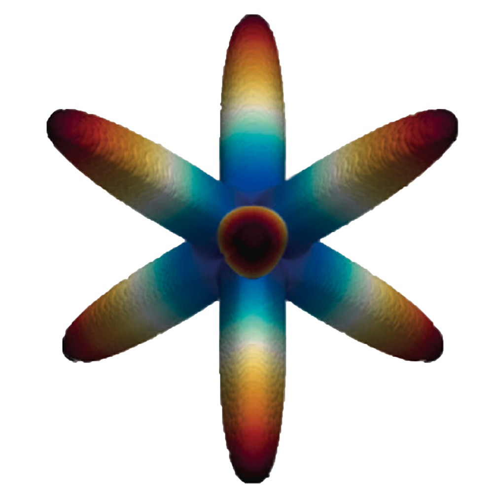
2024
ScienceDirect
A finite element based homogenization code in python: HomPy
Ozdilek, E. E., Ozcakar, E., Muhtaroglu, N., Simsek, U., Gulcan, O., & Sendur, G. K. (2024)
A curated list of publications connected to TPMS lattices, homogenization, and optimization.

Ozdilek, E. E., Ozcakar, E., Muhtaroglu, N., Simsek, U., Gulcan, O., & Sendur, G. K. (2024)
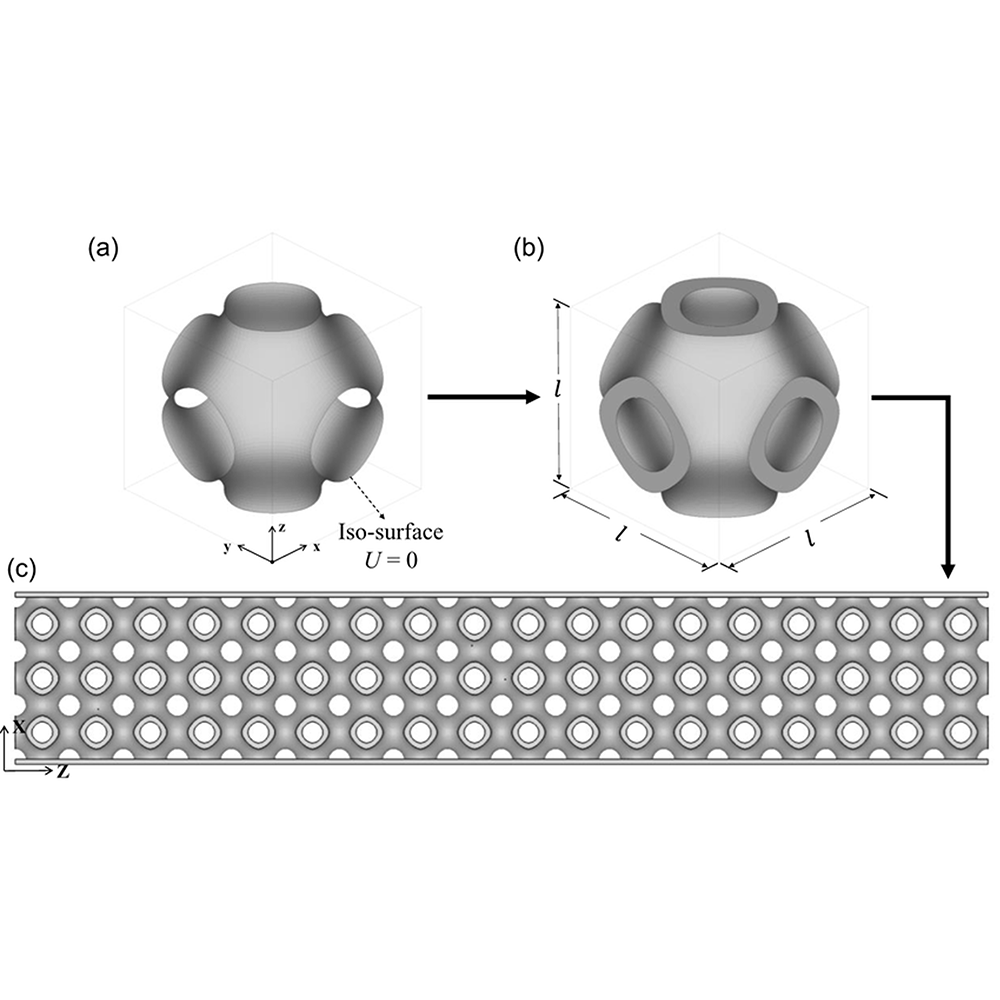
Ozden, M. C., Simsek, U., Ozdemir, M., Gayir, C. E., & Sendur, P. (2024).
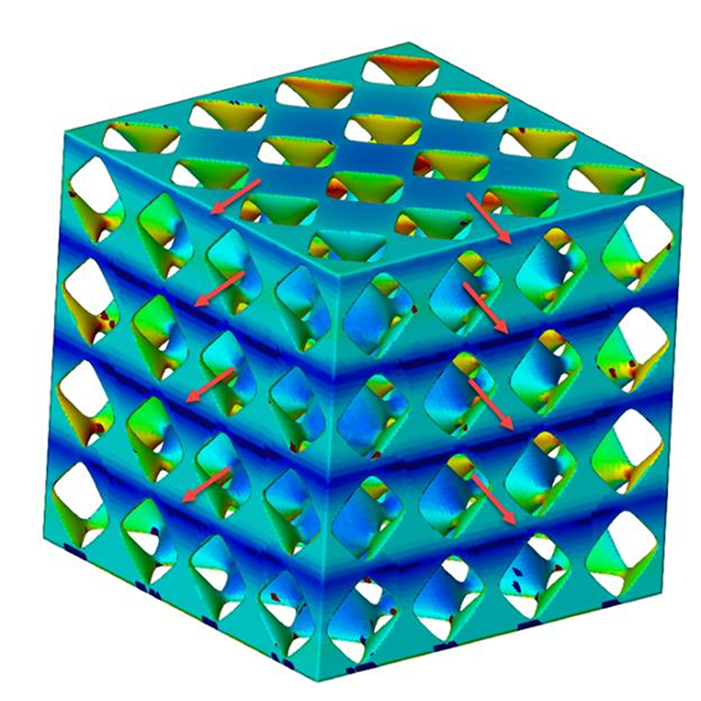
Gülcan, O., Günaydın, K., & Simsek, U. (2024).
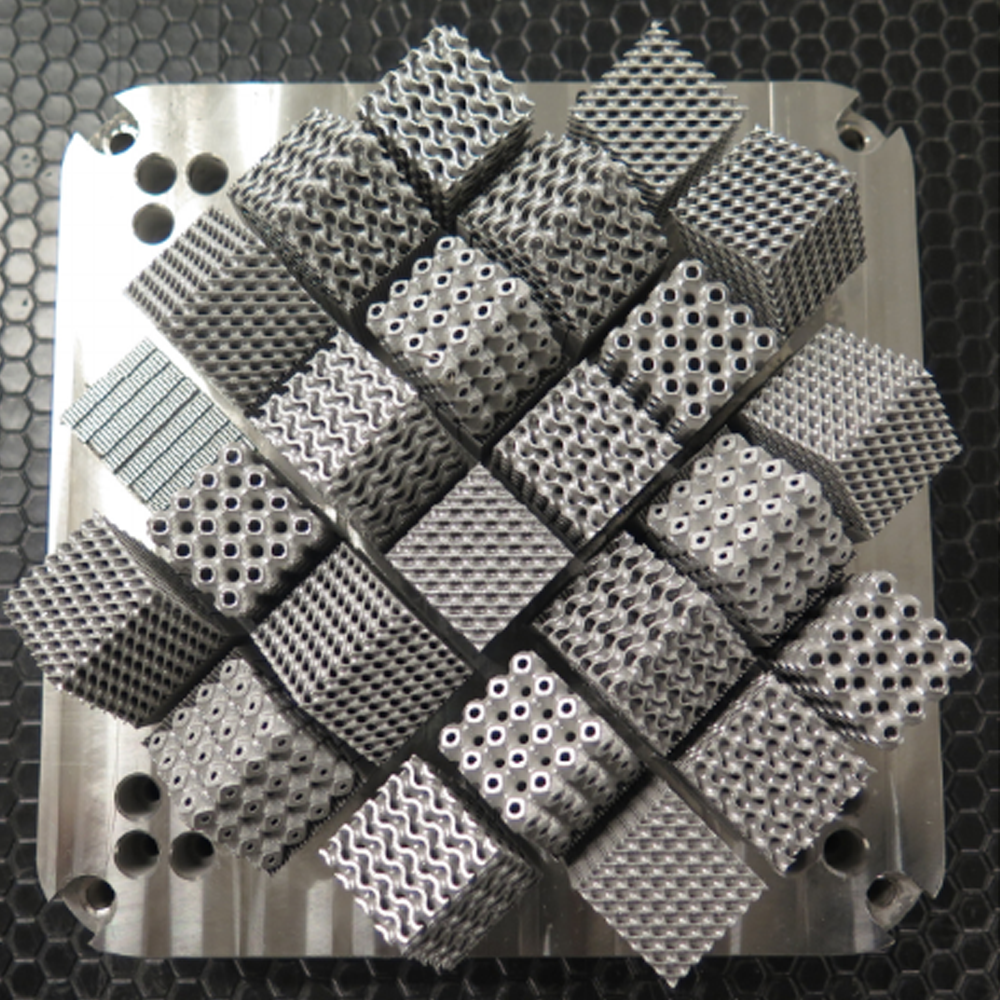
Şimşek, U., Gülcan, O., Günaydın, K., & Tamer, A. (2024).
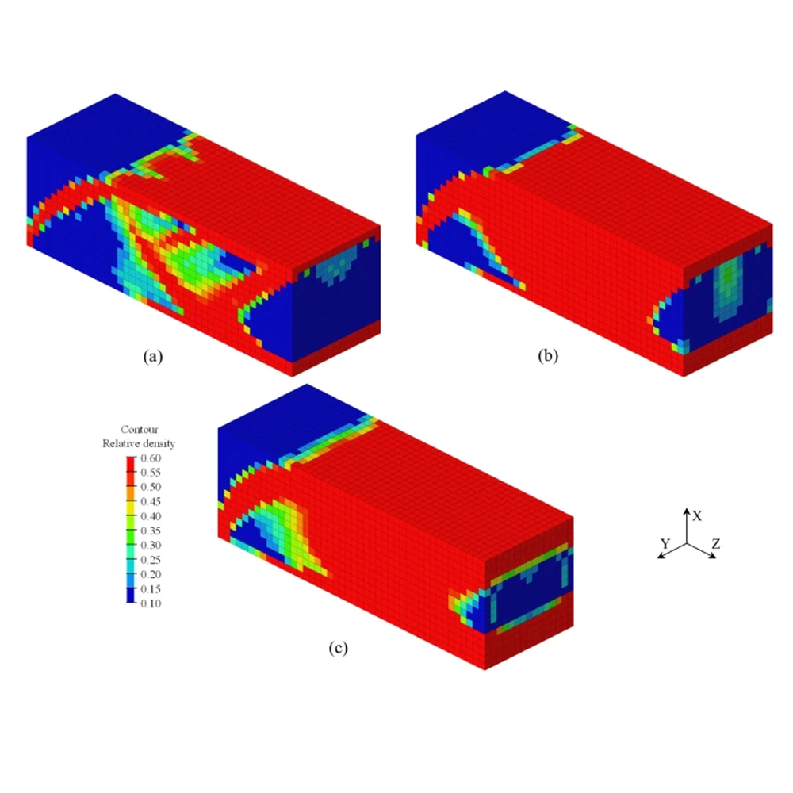
Parlayan, O., Ozdemir, M., Gayir, C. E., Simsek, U., & Kiziltas, G. (2023).
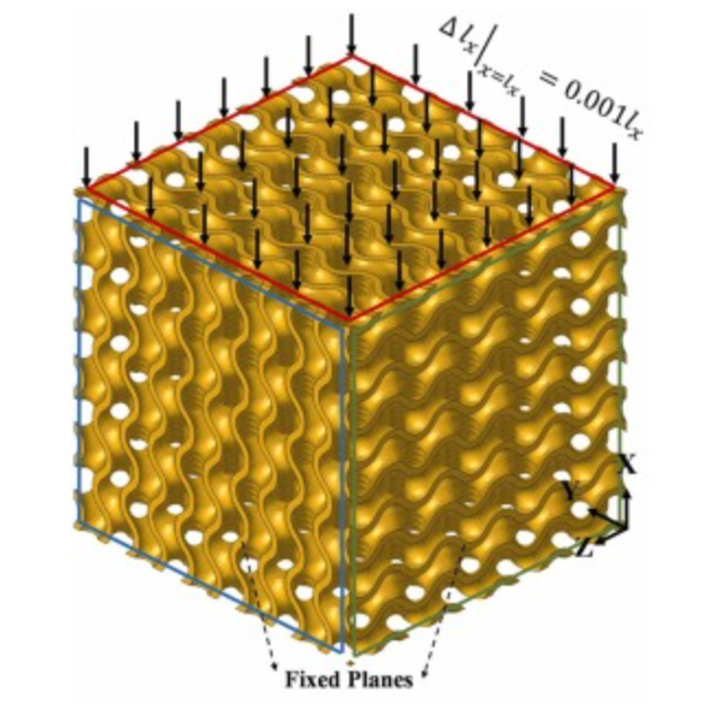
Ozdemir, M., Simsek, U., Kiziltas, G., Gayir, C. E., Celik, A., & Sendur, P. (2023).
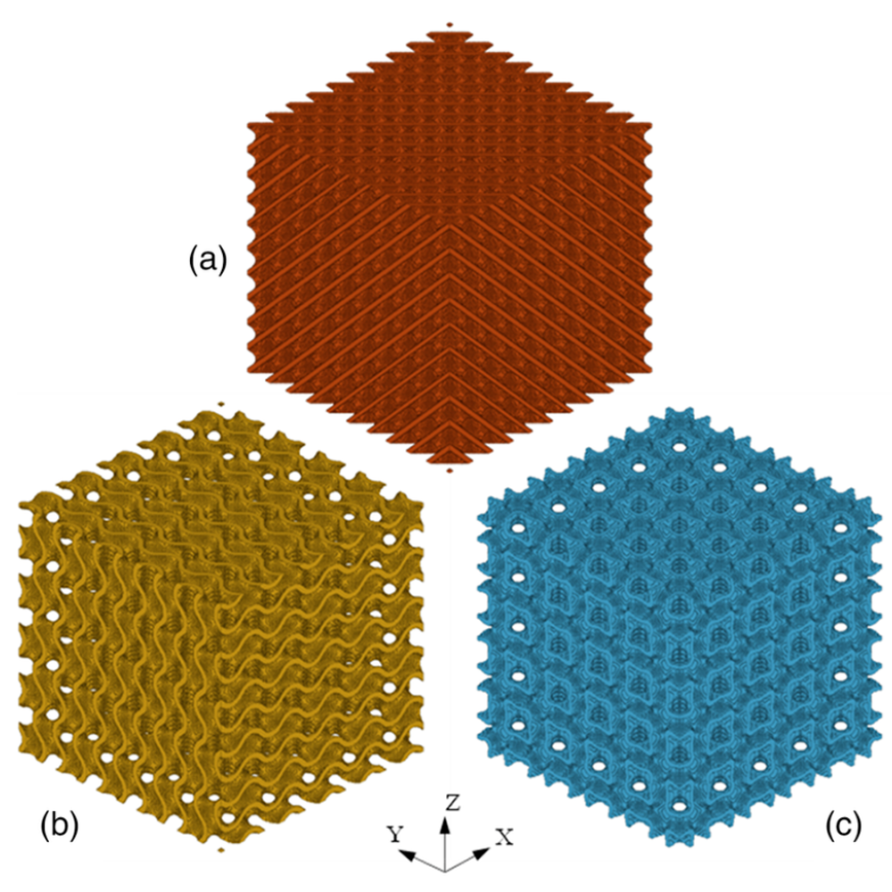
Ozdemir, M., Simsek, U., Kuser, E., Gayir, C. E., Celik, A., & Sendur, P. (2023).
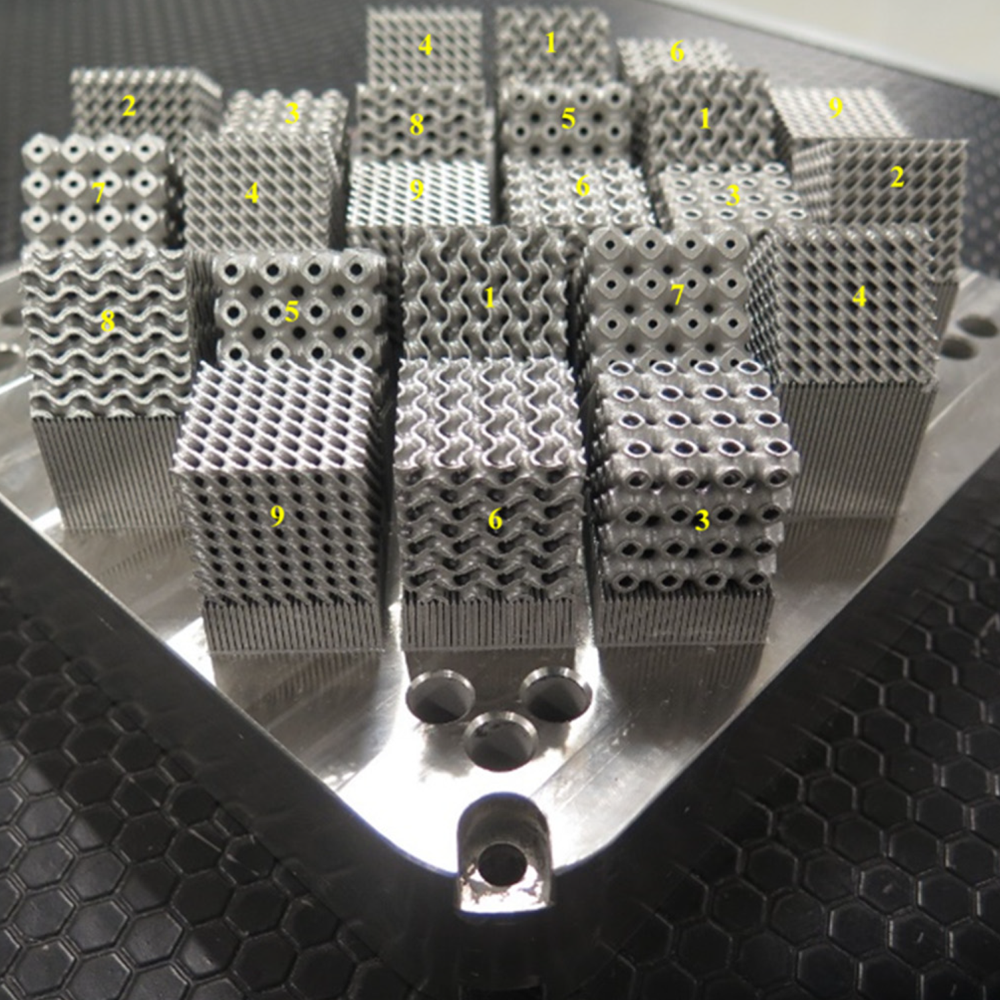
Gulcan, O., Simsek, U., Cokgunlu, O., Ozdemir, M., Şendur, P., & Yapici, G. G. (2022).
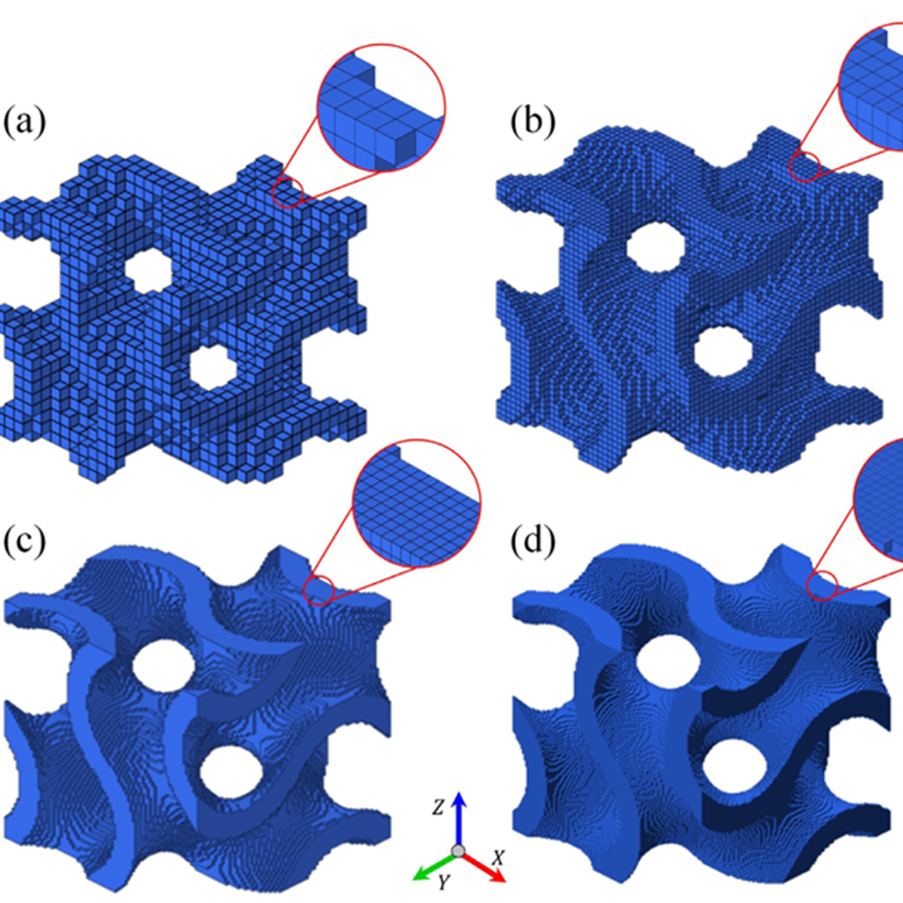
Simsek, U., Ozdemir, M., & Sendur, P. (2021).
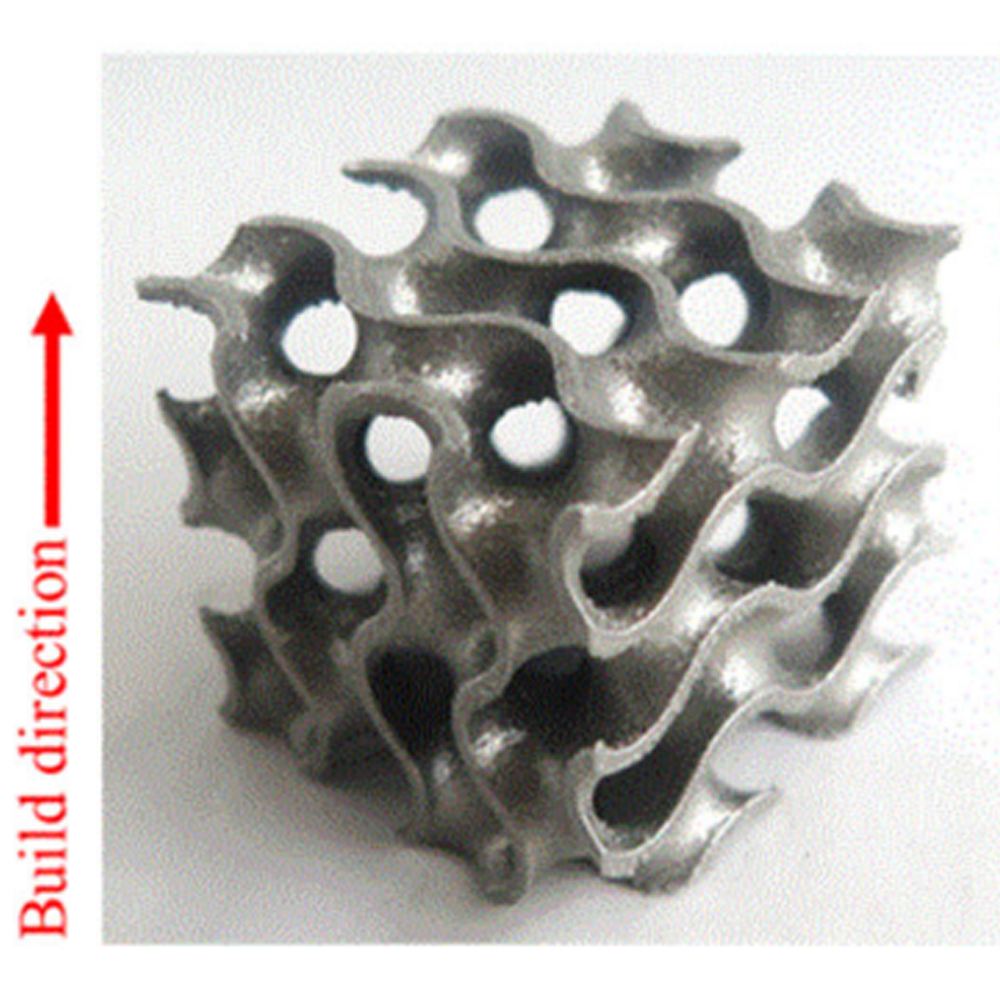
Simsek, U., Arslan, T., Kavas, B., Gayir, C. E., & Sendur, P. (2021).
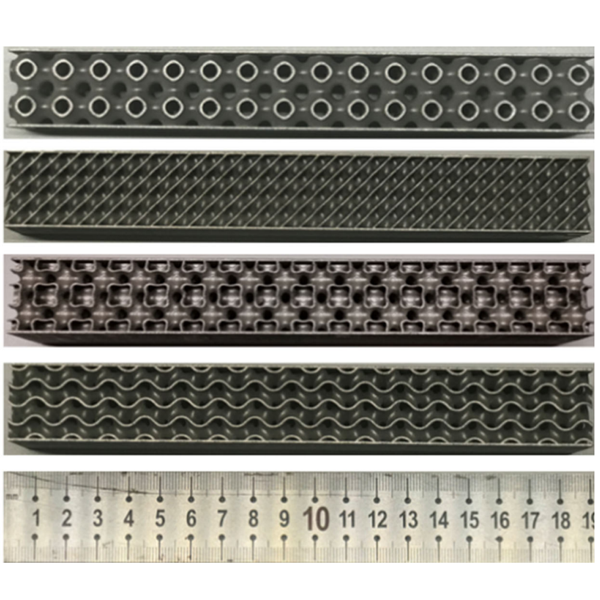
Simsek, U., Akbulut, A., Gayir, C. E., Basaran, C., & Sendur, P. (2021).
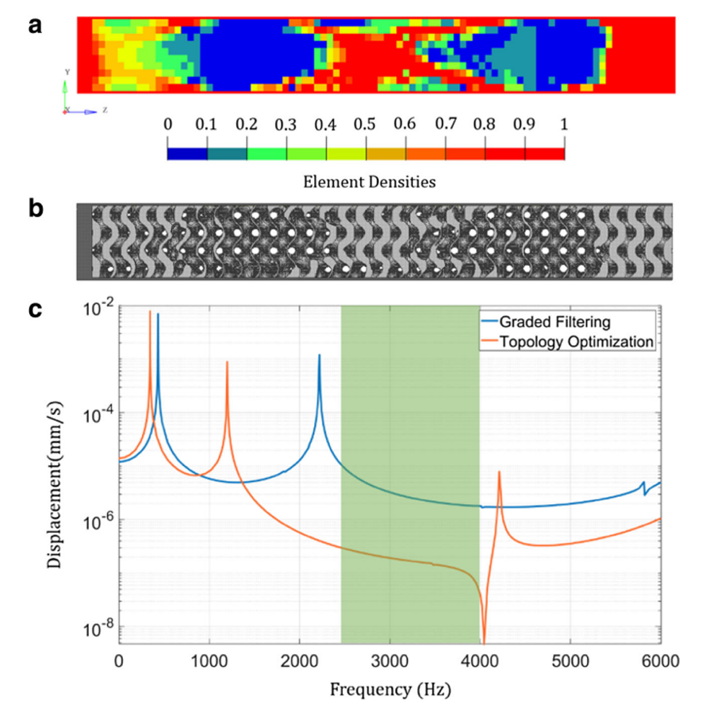
Simsek, U., Gayir, C. E., Kiziltas, G., & Sendur, P. (2020).